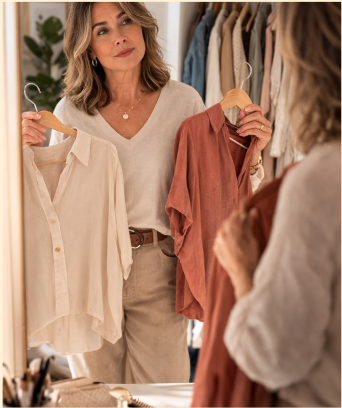

04 / INSPIRAÇÕES PARA EXPLORAR
Um universo de possibilidades


A moda é uma maneira de contar histórias sem precisar dizer uma palavra. Ela acompanha nossas mudanças, revela nossos gostos e permite experimentar diferentes versões de nós mesmas.
Este é um espaço para descobrir, explorar e enxergar a moda por diferentes perspectivas.

As roupas podem comunicar muito sobre quem somos, nossos gostos, referências e até sobre como queremos nos sentir em determinado momento.
O estilo pessoal não precisa ser definido por uma única estética. Podemos gostar de peças clássicas, experimentar tendências, misturar referências e mudar nossas escolhas ao longo do tempo.
Vestir-se bem também é uma forma de se conhecer
Descobrir o próprio estilo é um processo de observação e experimentação.
Observe quais peças fazem você se sentir bem.
Identifique cores, modelagens e combinações que despertam seu interesse.
Explore diferentes referências de moda.
Experimente novas possibilidades sem se prender a padrões.
Entenda que seu estilo pode mudar com o tempo.
A relação com a moda também envolve a maneira como nos enxergamos.
As roupas podem contribuir para nossa confiança e para a forma como nos expressamos, mas não precisam determinar nosso valor ou nossa beleza.
Não existe uma maneira correta de ser bonita, nem um estilo que todos precisam seguir. O mais importante é construir uma relação com a moda que faça sentido para você.
Explore novas possibilidades, descubra suas preferências e construa um estilo que tenha a sua identidade.
DESCOBRIR MEU ESTILO